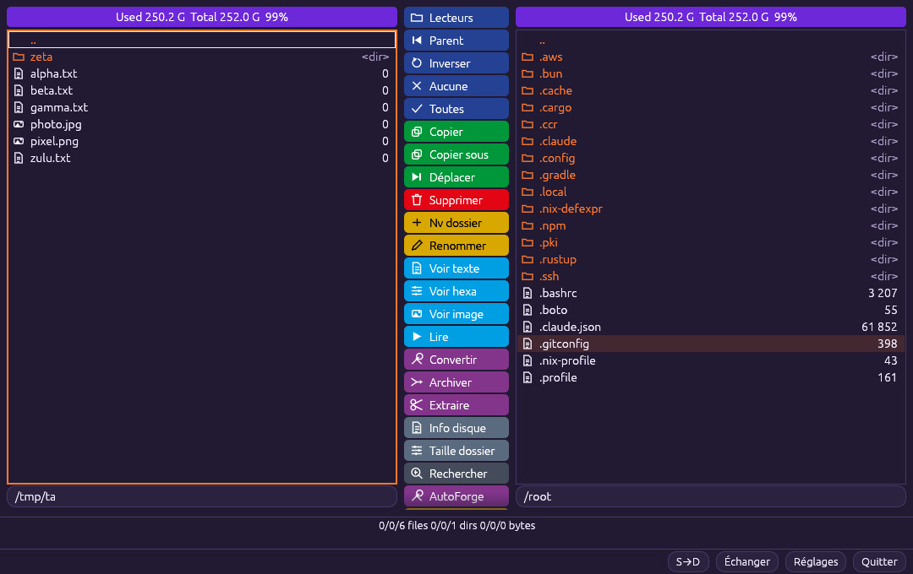
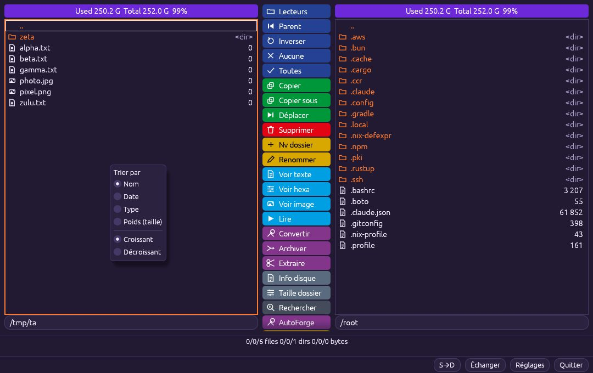

📁 FileForge
Gestionnaire de fichiers à double panneau. FileForge affiche deux dossiers côte à côte : copiez, déplacez, renommez, archivez et recherchez à la souris ou au clavier, avec une file d'attente d'opérations.
Les deux panneaux #
Le panneau actif (cadre orange) est la source ; l'autre est la destination. Les boutons colorés du centre agissent de la source vers la destination.

- Tab change de panneau ; vous pouvez aussi cliquer sur le bandeau violet (Utilisé / Total) ou sur l'espace vide d'un panneau.
- Espace coche un élément ; Entrée ouvre ; Retour remonte au dossier parent.
- F5 copier · F6 déplacer · F7 nouveau dossier · F8 / Suppr supprimer.
- Saisie rapide : tapez quelques lettres, le curseur va au premier fichier qui commence ainsi.
- Tri : clic droit dans un panneau › Nom, Date, Type, Poids ; croissant ou décroissant.
- Boutons de sélection : Inverser, Aucune, Toutes ; Lecteurs affiche les disques.
Tri par clic droit #
Un clic droit dans le panneau ouvre « Trier par ». Les dossiers restent toujours en tête.

- Clic droit sur un fichier ou dans l'espace vide.
- Choisissez Nom, Date, Type ou Poids (taille).
- Choisissez Croissant ou Décroissant. Le curseur reste sur le fichier actif.
File d'attente des opérations #
Copies, déplacements, suppressions et archivages sont placés dans une file : ils s'exécutent l'un après l'autre, sans saturer le disque.
- Lancez plusieurs opérations (F5, F6…) : elles s'enchaînent.
- Ouvrez la fenêtre de file d'attente pour voir la progression.
- Pour une opération en attente : annuler ou monter dans la file. Tout annuler vide la file.
- L'historique garde la trace des opérations terminées.
Glisser-déposer #
Glissez des fichiers de l'Explorateur vers FileForge, d'un panneau à l'autre, ou de FileForge vers d'autres applications (Windows).
- Depuis l'Explorateur : déposez sur un panneau pour copier ou déplacer vers ce dossier.
- Entre panneaux : glissez la sélection vers l'autre panneau.
- Vers une autre application : glissez depuis FileForge (Windows).
Archiver et extraire #
Les boutons Archiver et Extraire créent ou ouvrent des archives ZIP, 7z et RAR, selon les outils installés (7-Zip, WinRAR).
- Cochez les éléments puis cliquez sur Archiver ; choisissez format, niveau et nom.
- Pour décompresser : sélectionnez l'archive, cliquez sur Extraire.
- Le travail s'exécute dans la file d'attente.
Renommage avancé #
Renommer ouvre une fenêtre pour renommer un fichier ou toute une sélection, avec aperçu des nouveaux noms avant validation.
- Cochez les fichiers puis cliquez sur Renommer.
- Définissez le motif (texte, numérotation, date, jetons), ou un remplacement de texte.
- Contrôlez la colonne « nouveau nom » : les conflits sont signalés.
- Validez pour appliquer.
Recherche de fichiers #
Le bouton Rechercher cherche dans le dossier courant et ses sous-dossiers, par nom, extension, taille ou date.
- Cliquez sur Rechercher.
- Saisissez nom ou masque (
*.pdf), puis les filtres de taille/date. - Cliquez sur un résultat pour l'afficher dans le panneau.
Barre de boutons personnalisable #
La colonne centrale regroupe les actions : voir texte, voir hexa, voir image, lire (Player), convertir (MediaForge), AutoForge, info disque, taille dossier…
- Ouvrez Réglages › boutons.
- Cochez/décochez les boutons à afficher.
- Les boutons Lire, Convertir et AutoForge ouvrent les autres applications de la suite avec les fichiers cochés.
Réglages #
Les réglages couvrent la langue, le thème, la navigation en simple clic (Ctrl+clic pour sélectionner) et l'intégration Windows.
- Cliquez sur Réglages en bas à droite.
- Choisissez langue et thème.
- Activez la navigation en simple clic si vous préférez ce mode.